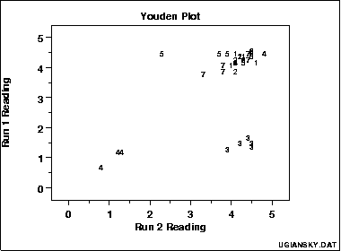

|
1. Exploratory Data Analysis 1.3. EDA Techniques 1.3.3. Graphical Techniques: Alphabetic 1.3.3.30. Youden Plot |
|
|
Purpose: Interlab comparisons |
Youden plots are a graphical technique for analyzing interlab data when each lab has made 2 runs on the same product or 1 run on 2 different products. |
|
Sample Plot: |
 This plot shows:
|
|
Importance |
|
| Questions |
The Youden plot can be used to answer the following
questions.
|
|
Input: 2 response variables Y1 and Y2 and 1 lab id variable LAB |
There are 2 response variables. These can be 2 runs of the same product or 1 run of 2 different products. In addition, there is lab id variable (this is typically coded as an integer from 1 to k where k is the number of labs). In summary, there are 3 columns of data of with the same number of rows. |
|
Definition: Response 1 versus response 2 coded by lab |
Youden plots are formed by:
|
|
Stat Category: Interlab Studies |
Youden plots are a specialized format for interlab studies. |
|
Usage: Light |
Youden plots are excellent for their intended purpose of analyzing interlab data when there are 2 runs (or 2 products). However, they do not have much use outside of this specialized purpose. |
| Reference | Youden, " ? ", ? . |
| Dataplot Command | YOUDEN PLOT Y1 Y2 LAB |
| Related Techniques |
Scatter Plot |
| Case Study | xxx |